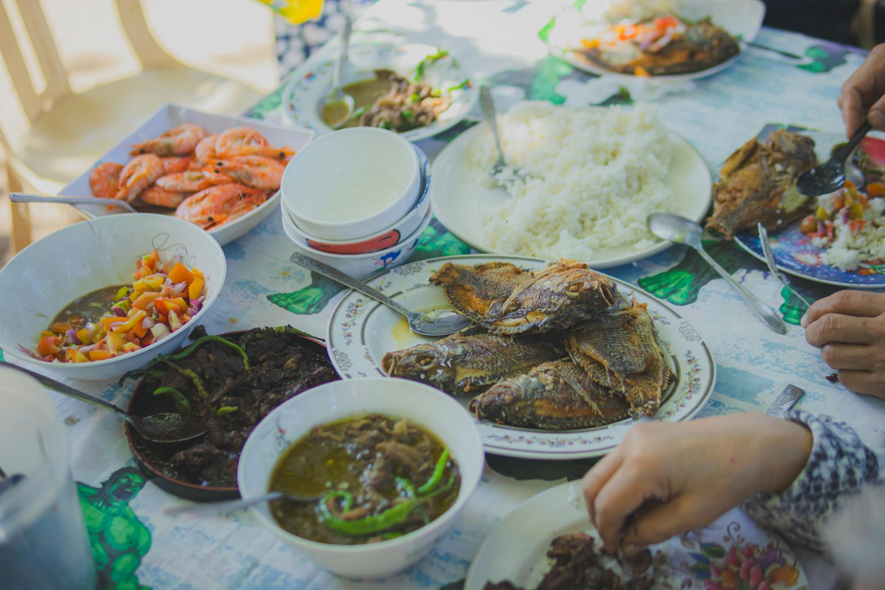

Preserving Heritage
Explore authentic recipes, learn traditional cooking methods, and preserve the culinary heritage of the Ilocos region. From savory bagnet to hearty pinakbet, embark on a delicious journey through Ilocano culture.

Recipes
Categories
Authentic
Explore dishes organized by type and occasion
Our platform is dedicated to preserving and promoting the rich culinary traditions of the Ilocos region. Each recipe is carefully documented with its history, traditional cooking methods, and cultural significance.
From time-honored classics like bagnet and pinakbet to lesser-known regional specialties, we're building a comprehensive digital archive of Ilocano cuisine for future generations.
Years of Tradition
Community Reviews